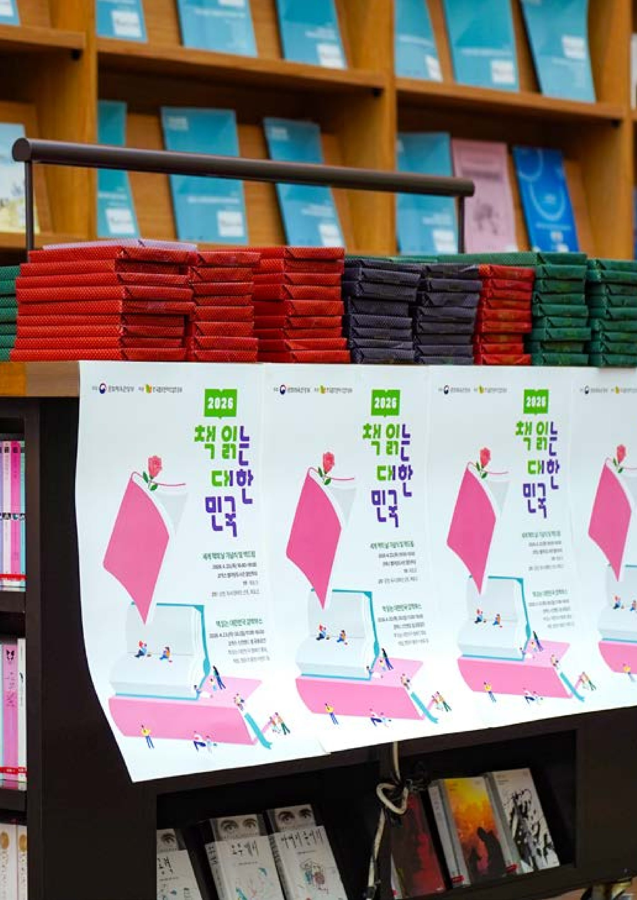
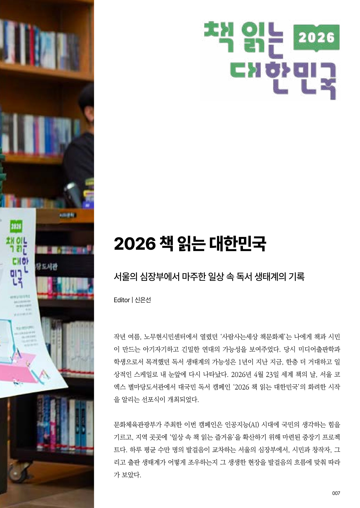
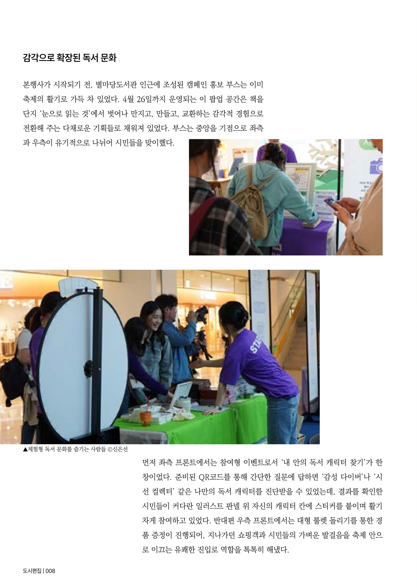
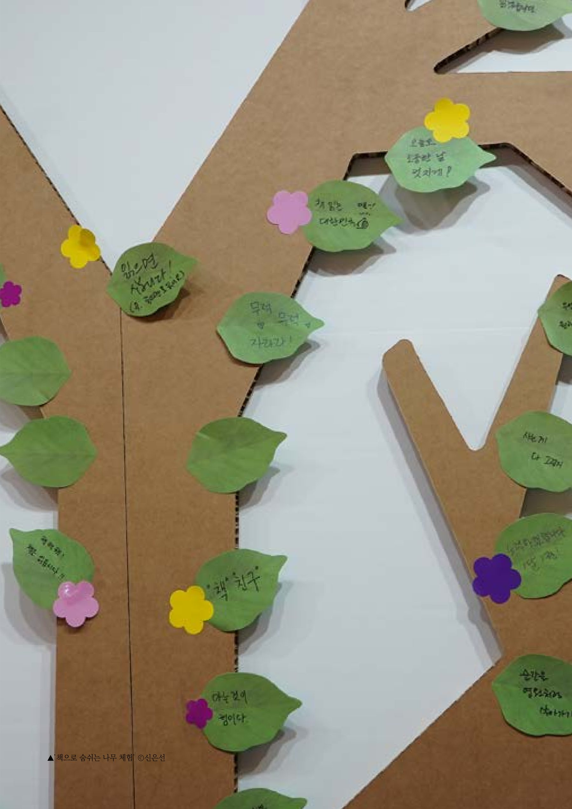
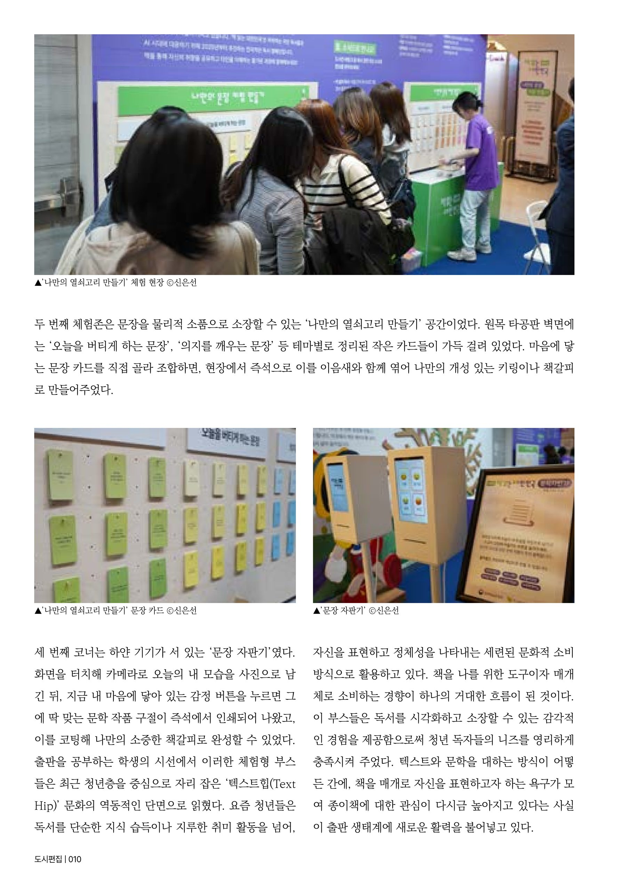
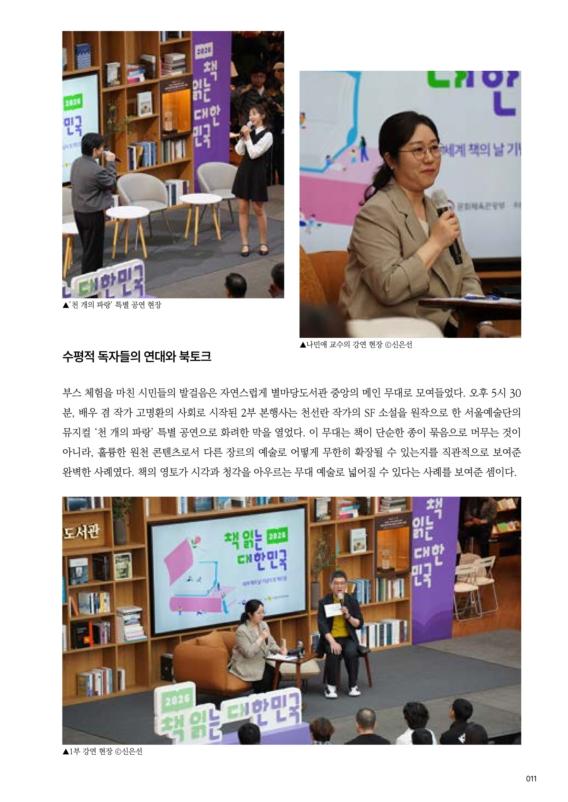
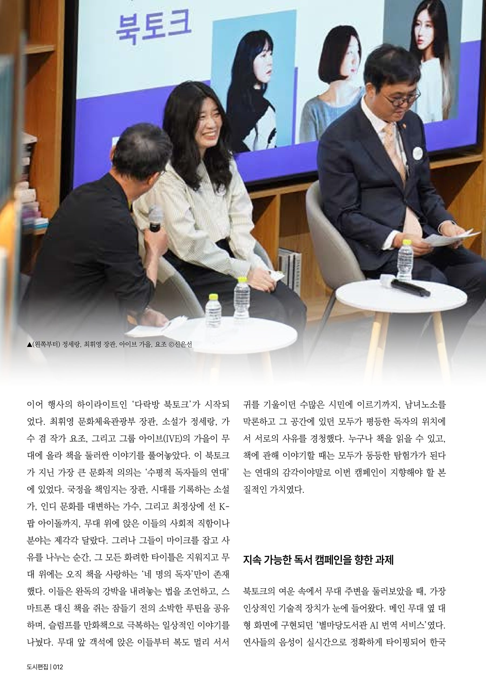
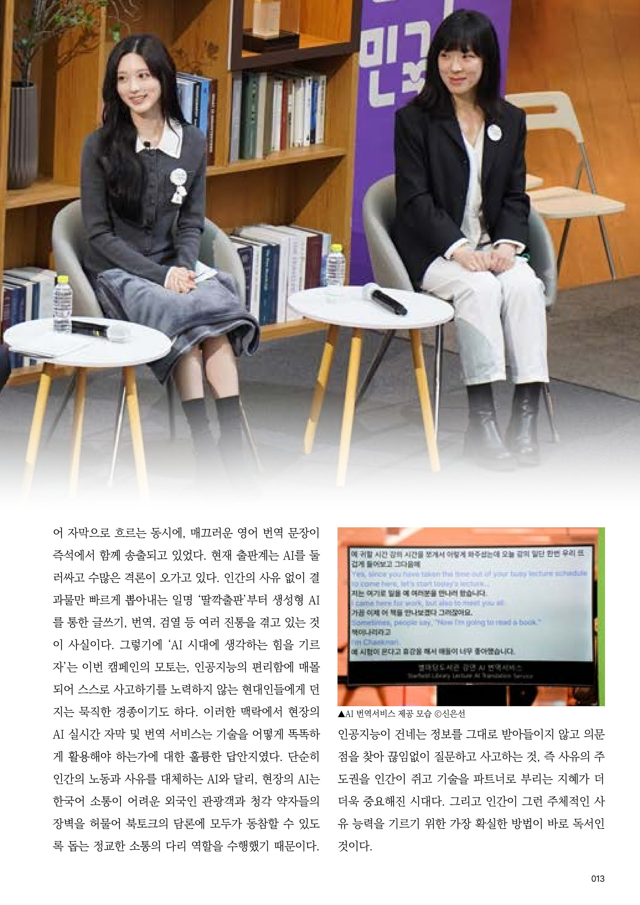
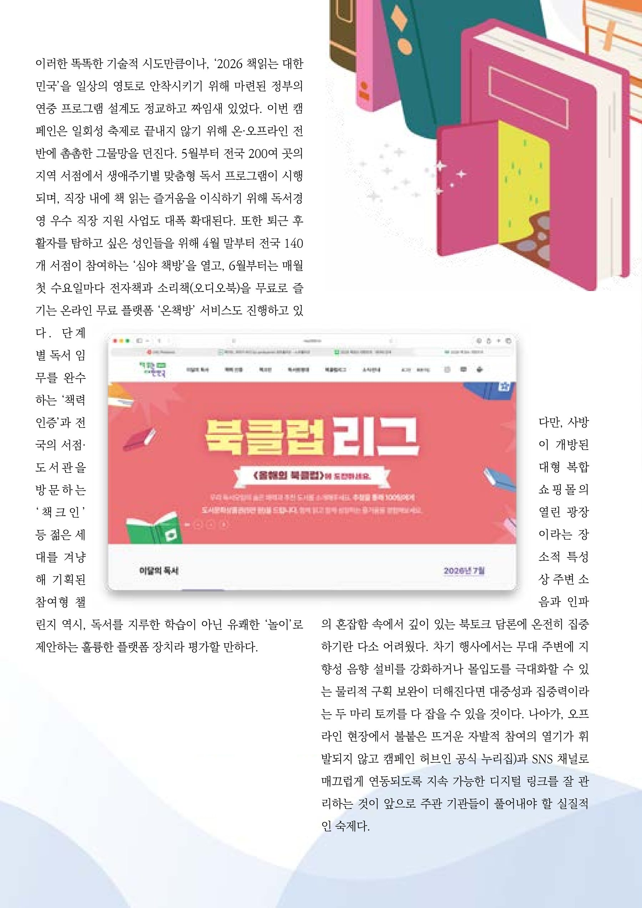
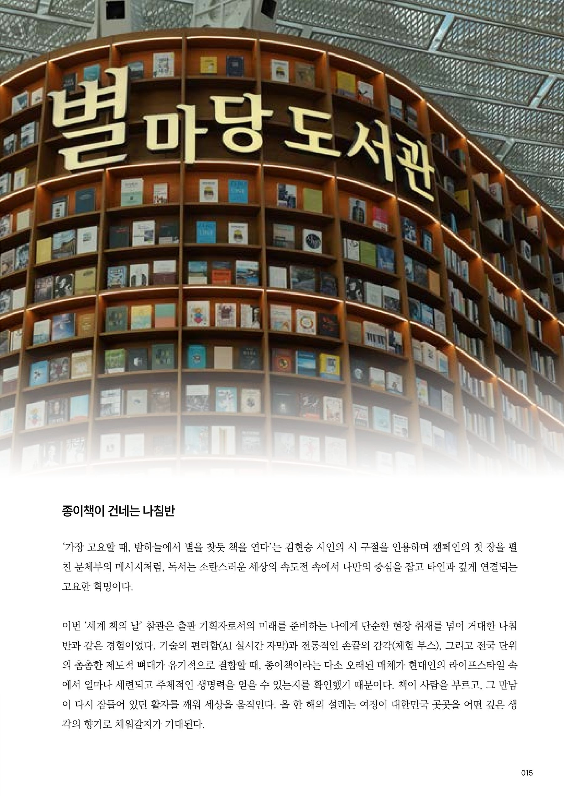

2026 책 읽는 대한민국
서울의 심장부에서 마주한 일상 속 독서 생태계의 기록
지면에서 옮긴 텍스트예요 · 사진과 레이아웃은 ‘지면으로 보기’에서 볼 수 있어요
작년 여름, 노무현시민센터에서 열렸던 ‘사람사는세상 책문화제’는 나에게 책과 시민이 만드는 아기자기하고 긴밀한 연대의 가능성을 보여주었다. 당시 미디어출판학과 학생으로서 목격했던 독서 생태계의 가능성은 1년이 지난 지금, 한층 더 거대하고 일상적인 스케일로 내 눈앞에 다시 나타났다. 2026년 4월 23일 세계 책의 날, 서울 코엑스 별마당도서관에서 대국민 독서 캠페인 ‘2026 책 읽는 대한민국’의 화려한 시작을 알리는 선포식이 개최되었다.
문화체육관광부가 주최한 이번 캠페인은 인공지능(AI) 시대에 국민의 생각하는 힘을 기르고, 지역 곳곳에 ‘일상 속 책 읽는 즐거움’을 확산하기 위해 마련된 중장기 프로젝트다. 하루 평균 수만 명의 발걸음이 교차하는 서울의 심장부에서, 시민과 창작자, 그리고 출판 생태계가 어떻게 조우하는지 그 생생한 현장을 발걸음의 흐름에 맞춰 따라가 보았다.
감각으로 확장된 독서 문화
본행사가 시작되기 전, 별마당도서관 인근에 조성된 캠페인 홍보 부스는 이미 축제의 활기로 가득 차 있었다. 4월 26일까지 운영되는 이 팝업 공간은 책을 단지 ‘눈으로 읽는 것’에서 벗어나 만지고, 만들고, 교환하는 감각적 경험으로 전환해 주는 다채로운 기획들로 채워져 있었다. 부스는 중앙을 기점으로 좌측과 우측이 유기적으로 나뉘어 시민들을 맞이했다.
먼저 좌측 프론트에서는 참여형 이벤트로서 ‘내 안의 독서 캐릭터 찾기’가 한창이었다. 준비된 QR코드를 통해 간단한 질문에 답하면 ‘감성 다이버’나 ‘시선 컬렉터’ 같은 나만의 독서 캐릭터를 진단받을 수 있었는데, 결과를 확인한 시민들이 커다란 일러스트 판넬 위 자신의 캐릭터 칸에 스티커를 붙이며 활기차게 참여하고 있었다. 반대편 우측 프론트에서는 대형 룰렛 돌리기를 통한 경품 증정이 진행되어, 지나가던 쇼핑객과 시민들의 가벼운 발걸음을 축제 안으로 이끄는 유쾌한 진입로 역할을 톡톡히 해냈다.
두 번째 체험존은 문장을 물리적 소품으로 소장할 수 있는 ‘나만의 열쇠고리 만들기’ 공간이었다. 원목 타공판 벽면에는 ‘오늘을 버티게 하는 문장’, ‘의지를 깨우는 문장’ 등 테마별로 정리된 작은 카드들이 가득 걸려 있었다. 마음에 닿는 문장 카드를 직접 골라 조합하면, 현장에서 즉석으로 이를 이음새와 함께 엮어 나만의 개성 있는 키링이나 책갈피로 만들어주었다.
세 번째 코너는 하얀 기기가 서 있는 ‘문장 자판기’였다. 화면을 터치해 카메라로 오늘의 내 모습을 사진으로 남긴 뒤, 지금 내 마음에 닿아 있는 감정 버튼을 누르면 그에 딱 맞는 문학 작품 구절이 즉석에서 인쇄되어 나왔고, 이를 코팅해 나만의 소중한 책갈피로 완성할 수 있었다.
출판을 공부하는 학생의 시선에서 이러한 체험형 부스들은 최근 청년층을 중심으로 자리 잡은 ‘텍스트힙(Text Hip)’ 문화의 역동적인 단면으로 읽혔다. 요즘 청년들은 독서를 단순한 지식 습득이나 지루한 취미 활동을 넘어, 자신을 표현하고 정체성을 나타내는 세련된 문화적 소비 방식으로 활용하고 있다. 책을 나를 위한 도구이자 매개체로 소비하는 경향이 하나의 거대한 흐름이 된 것이다. 이 부스들은 독서를 시각화하고 소장할 수 있는 감각적인 경험을 제공함으로써 청년 독자들의 니즈를 영리하게 충족시켜 주었다. 텍스트와 문학을 대하는 방식이 어떻든 간에, 책을 매개로 자신을 표현하고자 하는 욕구가 모여 종이책에 대한 관심이 다시금 높아지고 있다는 사실이 출판 생태계에 새로운 활력을 불어넣고 있다.
수평적 독자들의 연대와 북토크
부스 체험을 마친 시민들의 발걸음은 자연스럽게 별마당도서관 중앙의 메인 무대로 모여들었다. 오후 5시 30분, 배우 겸 작가 고명환의 사회로 시작된 2부 본행사는 천선란 작가의 SF 소설을 원작으로 한 서울예술단의 뮤지컬 ‘천 개의 파랑’ 특별 공연으로 화려한 막을 열었다. 이 무대는 책이 단순한 종이 묶음으로 머무는 것이 아니라, 훌륭한 원천 콘텐츠로서 다른 장르의 예술로 어떻게 무한히 확장될 수 있는지를 직관적으로 보여준 완벽한 사례였다. 책의 영토가 시각과 청각을 아우르는 무대 예술로 넓어질 수 있다는 사례를 보여준 셈이다.
이어 행사의 하이라이트인 ‘다락방 북토크’가 시작되었다. 최휘영 문화체육관광부 장관, 소설가 정세랑, 가수 겸 작가 요조, 그리고 그룹 아이브(IVE)의 가을이 무대에 올라 책을 둘러싼 이야기를 풀어놓았다. 이 북토크가 지닌 가장 큰 문화적 의의는 ‘수평적 독자들의 연대’에 있었다. 국정을 책임지는 장관, 시대를 기록하는 소설가, 인디 문화를 대변하는 가수, 그리고 최정상에 선 K-팝 아이돌까지, 무대 위에 앉은 이들의 사회적 직함이나 분야는 제각각 달랐다. 그러나 그들이 마이크를 잡고 사유를 나누는 순간, 그 모든 화려한 타이틀은 지워지고 무대 위에는 오직 책을 사랑하는 ‘네 명의 독자’만이 존재했다. 이들은 완독의 강박을 내려놓는 법을 조언하고, 스마트폰 대신 책을 쥐는 잠들기 전의 소박한 루틴을 공유하며, 슬럼프를 만화책으로 극복하는 일상적인 이야기를 나눴다. 무대 앞 객석에 앉은 이들부터 복도 멀리 서서 귀를 기울이던 수많은 시민에 이르기까지, 남녀노소를 막론하고 그 공간에 있던 모두가 평등한 독자의 위치에서 서로의 사유를 경청했다. 누구나 책을 읽을 수 있고, 책에 관해 이야기할 때는 모두가 동등한 탐험가가 된다는 연대의 감각이야말로 이번 캠페인이 지향해야 할 본질적인 가치였다.
지속 가능한 독서 캠페인을 향한 과제
북토크의 여운 속에서 무대 주변을 둘러보았을 때, 가장 인상적인 기술적 장치가 눈에 들어왔다. 메인 무대 옆 대형 화면에 구현되던 ‘별마당도서관 AI 번역 서비스’였다. 연사들의 음성이 실시간으로 정확하게 타이핑되어 한국어 자막으로 흐르는 동시에, 매끄러운 영어 번역 문장이 즉석에서 함께 송출되고 있었다. 현재 출판계는 AI를 둘러싸고 수많은 격론이 오가고 있다. 인간의 사유 없이 결과물만 빠르게 뽑아내는 일명 ‘딸깍출판’부터 생성형 AI를 통한 글쓰기, 번역, 검열 등 여러 진통을 겪고 있는 것이 사실이다. 그렇기에 ‘AI 시대에 생각하는 힘을 기르자’는 이번 캠페인의 모토는, 인공지능의 편리함에 매몰되어 스스로 사고하기를 노력하지 않는 현대인들에게 던지는 묵직한 경종이기도 하다. 이러한 맥락에서 현장의 AI 실시간 자막 및 번역 서비스는 기술을 어떻게 똑똑하게 활용해야 하는가에 대한 훌륭한 답안지였다. 단순히 인간의 노동과 사유를 대체하는 AI와 달리, 현장의 AI는 한국어 소통이 어려운 외국인 관광객과 청각 약자들의 장벽을 허물어 북토크의 담론에 모두가 동참할 수 있도록 돕는 정교한 소통의 다리 역할을 수행했기 때문이다.
인공지능이 건네는 정보를 그대로 받아들이지 않고 의문점을 찾아 끊임없이 질문하고 사고하는 것, 즉 사유의 주도권을 인간이 쥐고 기술을 파트너로 부리는 지혜가 더더욱 중요해진 시대다. 그리고 인간이 그런 주체적인 사유 능력을 기르기 위한 가장 확실한 방법이 바로 독서인 것이다.
이러한 똑똑한 기술적 시도만큼이나, ‘2026 책읽는 대한민국’을 일상의 영토로 안착시키기 위해 마련된 정부의 연중 프로그램 설계도 정교하고 짜임새 있었다. 이번 캠페인은 일회성 축제로 끝내지 않기 위해 온·오프라인 전반에 촘촘한 그물망을 던진다. 5월부터 전국 200여 곳의 지역 서점에서 생애주기별 맞춤형 독서 프로그램이 시행되며, 직장 내에 책 읽는 즐거움을 이식하기 위해 독서경영 우수 직장 지원 사업도 대폭 확대된다. 또한 퇴근 후 활자를 탐하고 싶은 성인들을 위해 4월 말부터 전국 140개 서점이 참여하는 ‘심야 책방’을 열고, 6월부터는 매월 첫 수요일마다 전자책과 소리책(오디오북)을 무료로 즐기는 온라인 무료 플랫폼 ‘온책방’ 서비스도 진행하고 있다. 단계별 독서 임무를 완수하는 ‘책력 인증’과 전국의 서점·도서관을 방문하는 ‘책크인’ 등 젊은 세대를 겨냥해 기획된 참여형 챌린지 역시, 독서를 지루한 학습이 아닌 유쾌한 ‘놀이’로 제안하는 훌륭한 플랫폼 장치라 평가할 만하다.
다만, 사방이 개방된 대형 복합 쇼핑몰의 열린 광장이라는 장소적 특성상 주변 소음과 인파의 혼잡함 속에서 깊이 있는 북토크 담론에 온전히 집중하기란 다소 어려웠다. 차기 행사에서는 무대 주변에 지향성 음향 설비를 강화하거나 몰입도를 극대화할 수 있는 물리적 구획 보완이 더해진다면 대중성과 집중력이라는 두 마리 토끼를 다 잡을 수 있을 것이다. 나아가, 오프라인 현장에서 불붙은 뜨거운 자발적 참여의 열기가 휘발되지 않고 캠페인 허브인 공식 누리집과 SNS 채널로 매끄럽게 연동되도록 지속 가능한 디지털 링크를 잘 관리하는 것이 앞으로 주관 기관들이 풀어내야 할 실질적인 숙제다.
종이책이 건네는 나침반
‘가장 고요할 때, 밤하늘에서 별을 찾듯 책을 연다’는 김현승 시인의 시 구절을 인용하며 캠페인의 첫 장을 펼친 문체부의 메시지처럼, 독서는 소란스러운 세상의 속도전 속에서 나만의 중심을 잡고 타인과 깊게 연결되는 고요한 혁명이다.
이번 ‘세계 책의 날’ 참관은 출판 기획자로서의 미래를 준비하는 나에게 단순한 현장 취재를 넘어 거대한 나침반과 같은 경험이었다. 기술의 편리함(AI 실시간 자막)과 전통적인 손끝의 감각(체험 부스), 그리고 전국 단위의 촘촘한 제도적 뼈대가 유기적으로 결합할 때, 종이책이라는 다소 오래된 매체가 현대인의 라이프스타일 속에서 얼마나 세련되고 주체적인 생명력을 얻을 수 있는지를 확인했기 때문이다. 책이 사람을 부르고, 그 만남이 다시 잠들어 있던 활자를 깨워 세상을 움직인다. 올 한 해의 설레는 여정이 대한민국 곳곳을 어떤 깊은 생각의 향기로 채워갈지가 기대된다.
10쪽 · 지면을 누르면 크게 볼 수 있어요









